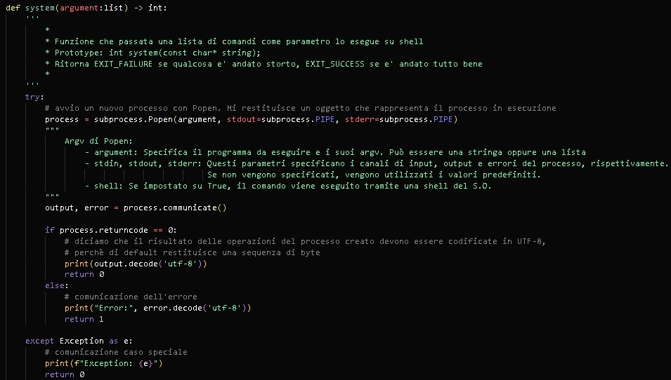

Creazione di un compilatore con Python e assembly
Requirements:
- Python 3.11 o maggiore (vai sul sito ufficiale)
- compilatore nasm (vai sul sito ufficiale)
- conoscenza base di nasm x64 bit
- gestione stringhe tramite regex con python
- linker ld (vai sul sito ufficiale)
- opzionale: debugger gdb (vai sul sito ufficiale)
In pratica, per costruire un linguaggio di programmazione tutto nostro, dobbiamo analizzare il codice sorgente e in base
a quello che è stato scritto bisogna tradurlo in codice assembly, poi tramite un compilatore (come nasm)
trasformarlo in un file oggetto per poi linkarlo (con un linker tipo ld) e produrre l'eseguibile.
pipeline:
il file sorgente.sor (l'estensione la decidiamo noi) viene dato in pasto al traduttore.py,
che ha il compito di analizzare il contenuto del file che gli abbiamo dato e di risputarlo
in formato assembly. In pratica, se all'interno del file sorgente c'è scritto:
print("Hello World")
Il traduttore dovrà inserire il codice assembly corrispondente nel file sorgente.asm per stampare a schermo "Hello World". Quindi:
Global _start
section .data
msg db "Hello World", 0
size_msg equ $ - msg
section .text
_start:
; all'inizio di ogni programma e' sempre consigliato di resettare i valori dei registri generali
xor rax, rax
xor rbx, rbx
xor rcx, rcx
xor rdx, rdx
; inserisco size_msg e msg all'interno dello stack, per prelevarli dopo all'interno della funzione print
push size_msg
push msg
call print
_exit: ; codice per uscita dal programma
mov rax, 60
xor rdi, rdi
syscall
print:
push rbp
mov rbp, rsp
mov rax, 1 ; codice chiamata sys-write
mov rdi, 1 ; file descriptor per STDOUT
mov rsi, [rbp + 16] ; ptr che punta al primo carattere del vettore msg
mov rdx, [rbp + 24] ; lunghezza del vettore di caratteri
syscall ; chiamata di sistema
leave ; svuoto tutto il contenuto dello stack
ret
Perchè dobbiamo analizzare il codice sorgente
Il traduttore deve riconoscere le istruzioni del file sorgente e tradurle in assembly, se non riesce a capire che cosa sta leggendo deve essere
in grado di fermarsi, di comunicare il tipo di errore e a che riga è avvenuto.
Come si svolge l'analisi sintattica del sorgente?
dato che il traduttore è un programma python, possiamo usare molto semplicemente il
modulo standard re
Per far capire meglio come funziona esattamente, farò un esempio molto semplice:
Supponiamo che nel codice sorgente ci sia scritto:
variabile = "Hello World"
ora, quello che deve fare il traduttore è prendere questa riga del sorgente e domandarsi
se questo è un comando accettabile oppure no. Per fare questo dobbiamo definire delle regex.
Per il nostro linguaggio vogliamo che le variabili vengano dichiarate in questo modo:
chiave = valore
Quindi in python, dobbiamo definire delle regex di questo tipo:
import re
syntax_var = [# caratteristiche delle variabili
r"\s*\_*[A-Za-z]+(\w*\_*)*", # chiave
r"\s*=\s*", # simbolo di assegnazione
r"\"([^\"]*[.]*)*\"\s*\n*", # valore caso stringhe
r"\s*\d+\s*([\-\*\+\/\%]\s*+\s*\d+\s*)*\s*\n*", # valore caso numeri interi o espressioni di numeri interi
]
Quindi quello che fara il programma è domandarsi costantemente:
"ma questa stringa è tra i pattern consentiti?"
Se lo è, trasforma la riga corrente in codice assembly (quindi lo inserisce anche nel file .asm)
Altrimenti comunica un errore di sintassi, fermando l'analisi.
una volta che il nostro traduttore ha tradotto tutto il contenuto del file sorgente in assembly,
deve avviare nasm. Per fare questo bisogna usare il modulo python subprocess.
In pratica dobbiamo dire di creare un sotto processo che ha accesso alla shell del sistema operativo, e che deve eseguire un comando.
nel nostro caso, il sottoprocesso deve compilare e linkare il programma assembly che abbiamo creato con l'analizzatore.

Quello che avviene all'interno del file "compiler.py" è molto semplice:
-
creiamo un file assembly in modalità di scrittura e ci scriviamo al suo interno
tutto il codice assembly tradotto dal sorgente analizzato
(quindi inseriamo section .data, section .text, section.bss). -
Una volta fatto questo, dobbiamo preparare le stringhe per la compilazione e il linkaggio che verranno passate alla chiamata system.
La funzione system ritorna 0 se l'esecuzione del comando passatogli come parametro ha funzionato, 1 se invece ci sono stati problemi.
Dove trovare il compilatore
L'eseguibile del compilatore puoi trovarlo sul mio GitHub,
Insieme a lui troverai un file .volt usato per i "test"